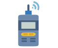
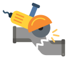
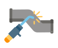
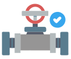
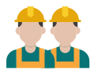

申請作業許可並執行管線隔離，確認作業範圍與相關安全措施。
辨識現場環境、潛在危害與逃生動線，確認個人防護具與作業條件。
確認氣源、設備與閥位狀態，確保設備安全並可執行作業。
依程序執行管線切割，確保火花控制並防止可燃氣體引燃。
檢查焊接環境與防火設置，執行焊接並監控焊接品質與火花飛散。
進行殘火確認與環境複檢，記錄訓練成效與改善建議。
系統紀錄操作過程與關鍵行為，提供行為分析與學習回饋。
自動彙整風險事件與錯誤類型，掌握風險趨勢與改善重點。

量化評估學習成果與技能表現，建立個人與團隊成效指標。
依據數據分析結果，優化教材與作業流程，持續提升安全績效。